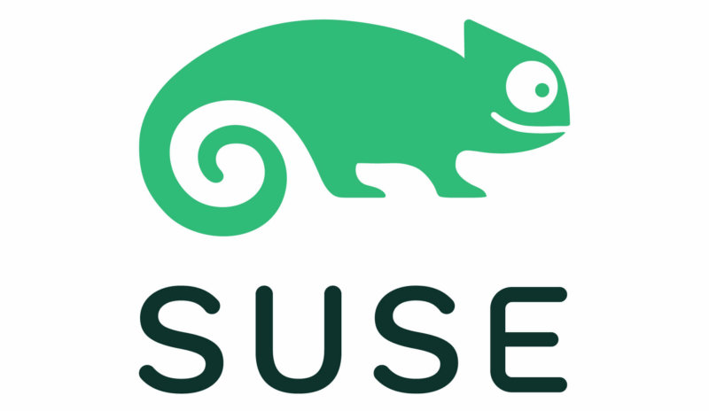

Resume
 Senior Software QA Engineer
Remote | November 2022 - Present
Architect for tfp-automation, a GitHub Actions-focused framework that tests Rancher Terraform providers, provisions Rancher environments, and replaces legacy Jenkins pipelines for streamlined regression and release testing.Lead validation of complex Rancher issues, performing thorough testing and root cause analysis to facilitate efficient bug triage and quality improvements.
Actively guided QA automation efforts, mentored junior engineers, and exercised cross-team collaboration across Rancher teams.
Maintained QA documentation for automation, issue validation, and test setup, improving team knowledge retention and onboarding.
Software QA Engineer
Remote | April 2022 - November 2022
Executed comprehensive QA testing for Rancher to validate issues and log defects to improve product quality.Developed and maintained automated test cases within the Go test framework, enhancing test coverage and reducing manual testing.
Authored internal Confluence documentation, expanding technical knowledge and improving collaboration.
Linux Product Engineer
Redlands, CA | November 2019 - April 2022
Validated and certified supported Linux distributions for ArcGIS Enterprise.Lead engineer for the deployment of ArcGIS Enterprise on Kubernetes, driving scalable, reliable installation and configuration processes.
Implemented Jenkins-based regression testing framework for ArcGIS Enterprise, improving release quality and early defect detection.
Authored the “Monthly Linux Tip” blog series for ArcGIS, consistently engaging readers with ~500 page views per post and enhancing Linux user knowledge.
Support Engineer
Redlands, CA | January 2018 - November 2019
Presented troubleshooting presentations for customers at ESRI UC 2019.Resolved ~800 cases with high-quality customer satisfaction and positive customer surveys.
Mentored implementation and WebGIS analysts.
 Software Technical Consultant Engineer
Software Technical Consultant Engineer
Santa Clara, CA | July 2016 - December 2017
Delivered documentation, code samples, and tutorial videos for Parallel XE 2018. Software Technical Consultant EngineerPresented Intel C++ / Fortran compiler presentations to stakeholders.
Led system administrative tasks for maintaining Intel compiler machines.
Working Skills
Operating Systems
LinuxmacOS
Windows
Cloud Computing
AWSAzure
GCP
Linode
Containerization
DockerKubernetes
Helm
Testing
FunctionalRegression
Smoke
Sanity
Negative
Tools
TerraformGit
Jenkins
Jira
Confluence
GitHub
Education
Undergraduate
Degree: B.S. Computer Science & EngineeringUniversity: University of California, Merced
Years: 2012 - 2016